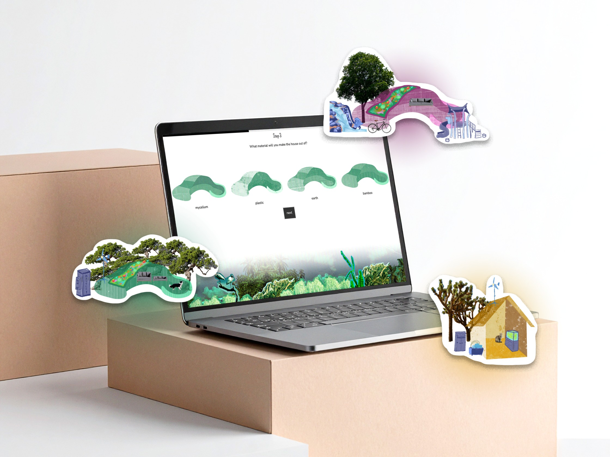
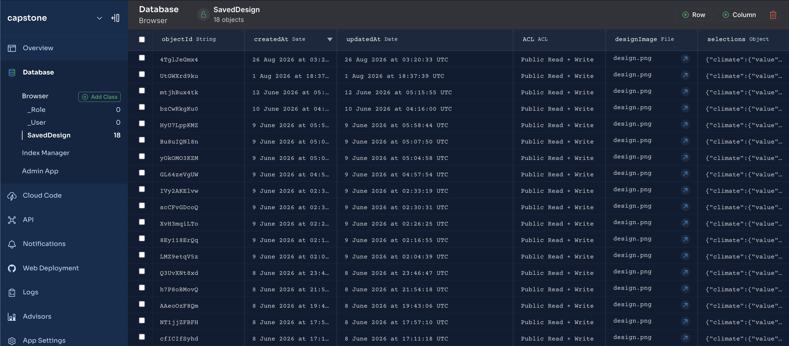

Climate Home Kit
ROLE
Solo Designer and Developer
TOOLS
Illustrator, Photoshop, Procreate, Figma, HTML, CSS, JS
SKILLS
Frontend & Backend Development, Data Storage, UI/UX Design
1OVERVIEW
For my Interactive Media III capstone project themed "Designing the Future," I built an interactive website that speculates on the future of sustainable housing.
This project explores how housing might evolve in response to climate change and post-fossil-fuel living by reimagining the historic Sears house kit as a participatory, modular, climate-resilient system for future communities.
It combines speculative thinking, data visualization, and utopian narratives.

Brainstorming ideas surrounding 'home' on Figma.
2GOALS & PIVOTS
Questions:
a. How can customization of a house become a learning process?
b. How can I approach the theme of climate change in a hopeful lens that makes the audience feel a part of a community?
This second question was the driving factor behind the many brainstorming sessions over how to execute this project. Initially, I was drawn to the idea of simulating a dystopian future by building a Zillow interface showing what the market would look like in 2060.
However, I wanted the audience to walking away from my project feeling optimistic about the future, so I pivoted.
My target audience became young adults navigating housing uncertainty and those frustrated by unaffordable, developer-driven housing.
3DEVELOPMENT
I became fascinated by the history of the Sears home kit. That not so distant in the past, homes were once mobile, modular, and accessible. The parts were mailed to you to build yourself.
Design theorist Victor Papanek argued that when you build something yourself, you form an emotional bond to it, also dubbed the “IKEA effect."
From this perspective, I went back to childhood “drag-and-drop” games for interface inspiration. From the likes of Sprout, PBS, and other random web games I’d stumble across, I wanted the user flow to play out as a quiz with the pieces being assembled at the end.

User flow outlining seven distinct steps.

Home designs.
4VISUAL DESIGN
The first choice became the climate which I limited to three: dry/arid, temperate, and tropical. I wanted the initial user choices like the climate, house shape, and house material to all inform one another and inform the rest of the steps.
I designed the houses with their different shape, climate, and material options in Illustrator using different textures and colors to differentiate. This resulted in 48 assets.
The supporting visuals like the windows and footers I created in Photoshop by collaging elements of each climate to represent community as something assembled from many parts.
The rest of the choices in each step were drawn in Procreate.

User home designs are stored in Back4App to display later.

Entire play through.
5OUTCOMES & TAKEAWAYS
Overall, this was a very fulfilling project to make both in its process and final outcome. I learned a lot about backend data storage, frontend development, file organization, and how to make interactive ideas come to life.
I presented the project to the collective Interactive Media III students, and also to faculty, alumni, and other visitors. I’d like to thank my professors, T.A’s, and peers for their support and help along the way!
If you’d like to see the full development of the project, check out my portal page here.